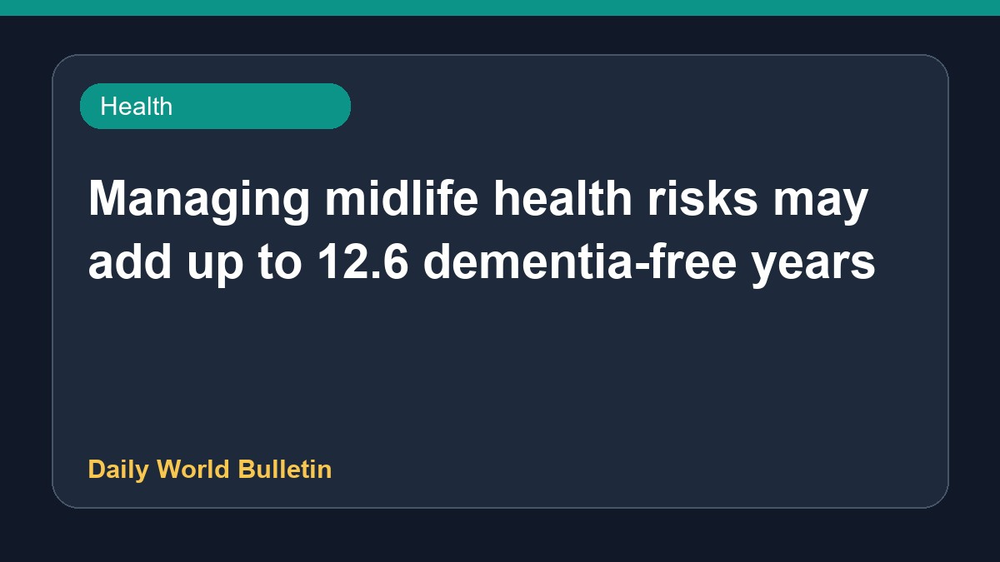

Managing midlife health risks may add up to 12.6 dementia-free years

Recent studies indicate that maintaining good health during the middle age period can significantly influence cognitive longevity. Controlling three specific midlife health risks between the ages of 45 and 65 could potentially add up to 12.6 or 13 healthy brain years, effectively delaying the onset of dementia. Experts highlight that proactive management of these lifestyle and health factors during this crucial stage of life plays a vital role in preserving cognitive function and ensuring a longer, healthier lifespan without dementia complications.